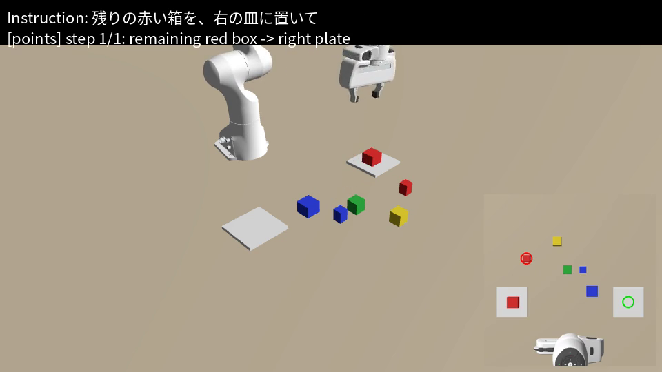
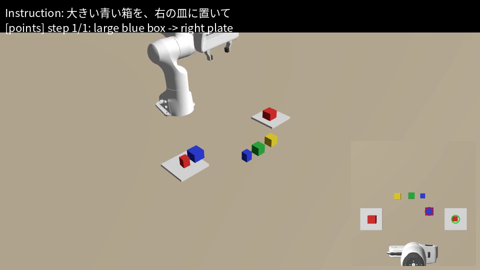

言語指示で箱を片付けるロボットアーム
Physical AI 応用1 最終課題 ／ VLM(Gemini)が画像と指示から「何を・どこへ」を決め、Genesis上のFranka Pandaが実行する
1. 概要と目的
「一番大きい赤い箱を左の皿に置いて」「小さい青い箱を緑の箱の右隣に」のように、大きさ・色・位置関係を含む自然な指示 でロボットアームに箱を並べ替えさせる。机の真上のカメラ画像と指示文をVLMに渡し、掴む箱と置く場所を画像上の点として返してもらい、それを世界座標に変換してアームを動かす。
目的は、(1) 色だけで物体が決まらない場面(同色で大小の箱が2組ある)で、VLMによる画像の理解を実際に使うこと、(2) VLMの出力が失敗したり外れたりしても止まらない、実際に動かし続けられる仕組みにすること、の2点である。動画は等倍で、倍速再生はしていない。
2. システム構成
① 観測
→
② 計画 (Gemini) [y,x]の点で出力
→
③ 座標変換
→
④ 実行
環境 : Genesis 1.4.5(Colab 無料枠 T4)、Franka Panda、箱6個(赤の大小・青の大小・緑・黄)と皿2枚。座標変換 : カメラは真下向きで、全ての箱の上面の高さが同じ(4cm)なので、画像座標と机上座標は単純な線形変換で結べる(ppl/geometry.py)。往復変換と向きは単体テストで確認した。把持 : 箱の上空へIKで移動 → 降下 → グリッパを閉じる → 持ち上げ。把持の成否は、持ち上げ後の箱の高さで判定する。
3. 工夫した点
同色・異サイズの場面設計 :色名だけでは対象が決まらないため、「一番大きい」「小さい」「残りの」といった比較・状態の理解 が必須になる。「残りの赤い箱」は、1本目で大きい赤い箱が動いた後の画像を見て初めて決まる。相対位置の指示 :「緑の箱の右隣」「左隣」を、画像の左右として解釈させ、約9cm離れた空き地点を返させる。3段の保険 (止まらないための設計):
VLMの点が、どの箱にも5cm以内に当たらない、または出力が解釈できない → 各物体に番号を描いた画像で聞き直す(番号選択方式、marks)。
物理的に掴めない → 箱をハンドに追従させる方式に切り替える。今回は5回とも切り替わらず、全て物理把持で成功した。
Geminiが混雑・制限中(503/429) → 再試行し、次のモデルへ自動で切り替える(3.8 → 3.7 → 3.5 → 3.1-lite)。1回の呼び出しは60秒で打ち切る。
配置の衝突回避 :同じ皿に複数の箱を置くとき、既存の箱とぶつからないよう目標をずらす(右の皿に赤の小箱と青の大箱が共存)。説明のしやすさ :動画の右下に「VLMが選んだ箱(赤い輪)と置き場所(緑の輪)」を重ね、字幕に指示と使用方式(points/marks)を出した。再現性 :成功した計画をplan_cache.jsonに保存し、再実行ではAPIを使わずに同じ動作を再生できる。APIキーはコードに含めず、環境変数で渡す。
4. 結果
5本の指示を続けて実行した(1本ごとに、前の結果の盤面から開始)。全て最後まで実行でき、目標との位置誤差は2〜5mmだった。
# 指示 動かした箱 方式 把持 誤差 1 一番大きい赤い箱を、左の皿に置いて 赤(大) points 物理 4 mm 2 小さい青い箱を、緑の箱の右隣に置いて 青(小) points 物理 2 mm 3 残りの赤い箱を、右の皿に置いて 赤(小) points 物理 4 mm 4 黄色い箱を、緑の箱の左隣に置いて 黄 marks 物理 4 mm 5 大きい青い箱を、右の皿に置いて 青(大) points 物理 5 mm
使われたモデルは5本とも gemini-3.5-flash だった(3.8-flash と 3.7-flash は、毎回レート制限(429)のため自動で切り替わった)。

3本目の実行中。左の皿に赤(大)が載り、右下にVLMの選択(赤い輪=掴む箱、緑の輪=置き場所)が表示される。 
5本目の実行中。右の皿に赤(小)と青(大)が共存し、左の皿には赤(大)が残っている。
5. 失敗・限界と考察
4本目だけ marks に切り替わった理由 :Geminiが{"steps": [...]}ではなく、リストそのものを返し、私の解析がそれに対応していなかったため(list indices must be integers)。保険の方式で正しく実行できたことは、設計の効果の確認にもなった。原因は、リストも受け付ける形に修正し、テストを追加した。ただし、修正後に4本目をやり直してはいない(動画は修正前の挙動のまま)。実行環境の問題 :当初、実行がセル内で1時間以上止まって見えた。原因は、Geminiへの呼び出しに再試行間隔はあったが、打ち切り時間がなかったことと、出力が最後まで表示されない書き方をしていたこと。タイムアウトとモデル切り替えを入れ、-uで進行を見えるようにした。評価が甘い点 :(a) VLMが返した掴む位置は、最も近い箱の中心に補正している(5cm以内)。この補正は、シミュレータ内の箱の位置を使っているため、現実のロボットにはそのまま使えない。(b) 成否と誤差の評価も、シミュレータが持つ真の位置で行った。(c) 実行は各指示1回で、成功率の統計は取っていない。未実装 :把持に失敗したとき、画像から原因をVLMに推定させて、やり直す機能。「机を片付けて」のような抽象的な指示を複数手順に分解する指示も試していない。今後 :箱の位置を画像だけから決める(補正をなくす)、実機のカメラ画像への展開(照明や影、カメラのずれの影響を調べる)、失敗の自己修正。